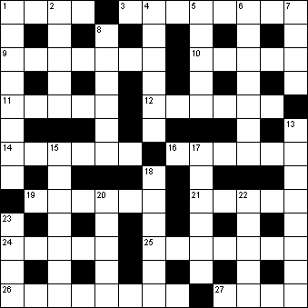

|
|
Daily Quick Crossword
23 May

|
Across 1 Open flat-bottomed boat (4)3 Dutch or German spirit (8) 9 Type of orange (7) 10 Sixth sign of the zodiac (5) 11 Artificial silk (5) 12 Well matured (6) 14 Wretchedness (6) 16 Alloy of copper and tin (6) 19 Capital of Tasmania (6) 21 Renowned (5) 24 Implicitly understood (5) 25 Disinclination to move (7) 26 Merriment (8) 27 One of the gifts of the Magi (4) |
Down 1 Cured sliced beef (8)2 Dapper (5) 4 Unpleasantly damp and warm (6) 5 Umbilicus (5) 6 Steal (7) 7 Shortly (4) 8 Artilleryman (6) 13 Promontory (8) 15 Indifferent to pain and pleasure (7) 17 Roof beam (6) 18 Rigorous (6) 20 Modify (5) 22 Phrase on a coat of arms (5) 23 Skin irritation (4) |
|
Copyright © 2020 Simply Daily Puzzles
|